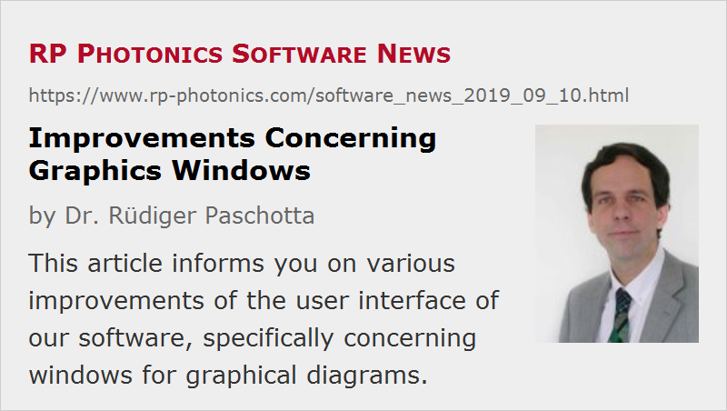

Improvements Concerning Graphics Windows
Posted on 2019-09-10 in the RP Photonics Software News (available as e-mail newsletter!)
Permanent link: https://www.rp-photonics.com/software_news_2019_09_10.html
Author: Dr. Rüdiger Paschotta, RP Photonics Consulting GmbH
Abstract: This article informs you on various improvements of the user interface of our software, specifically concerning windows for graphical diagrams.

This article informs you on various improvements of the user interface of our software, specifically concerning windows for graphical diagrams. These features were implemented already a while ago. I consider them important, since they allow you to easily do common operations without being distracting from the physics and design issues.
The information applies to our software products RP Fiber Power, RP Resonator, RP Coating and RP ProPulse. It might be useful both for those already using our software and those considering to purchase a license. The former may have to request a free update in order to get all the explained features.
You may also like to learn about new editor features explained in the RP Photonics Software News 2017-07-13.
Numerical Output
I am often asked about the possibility to produce numerical output corresponding to displayed diagrams. For a long time, this has been possible only using the script language. However, a while ago I decided to offer an additional feature in the graphics windows, where you can directly see and copy the numerical outputs of all calculated data points for each displayed a diagram. As an example, I use a graphics window made with a demo file of RP Fiber Power:
At the top of the window, you can see the tabs “Graphics”, “Numerical data” and “Logs”. If you click on “Numerical data”, you get all the data points corresponding calculated when making the diagrams:
Note that you can freely decide on the format of the displayed data points. The default setting produces x and y values, separated with commas and formatted with six valid digits. However, you could for example also rescale the values, display them with units or whatever else might be convenient to have.
By the way, it is actually not always a good idea to export such data and import them somewhere else, because it is usually more convenient to implement the planned operations (e.g. further data processing) fully in our software. However, you are welcome to export anything if you prefer it that way.
Log Data
With a click on the tab “Logs”, you get the log data produced when creating the diagram.
In our example case, the logs just show you what graphs have been produced, and in which ranges the vertical coordinates were obtained. This can be quite important for example in cases where you do not see any data points in the diagram because they were far outside the chosen vertical scale, or because the values could not be calculated due to some error in the script.
Compare Results with the Previous Version
It often happens that one modifies some parameter of a simulation and wonders how that affects the results. Therefore, the software now always stores the previous version of each diagram, and by clicking on “previous” (on the right side above the diagram) you can see this. By switching back and forth, you can easily recognize even small changes.
Making Multiple Diagrams
Another frequent case is that you like to have multiple versions of a diagram – for example, an intensity profile for each mode of a fiber, or just using different values of a certain parameter. This is quite easy to get and convenient to handle:
- In the script, you have to add an option for defining some range of values; here is an example, taken from our demo file for fiber modes:
diagram 2, size_px = (400, 460), for j := 1 to NoModes(lambda):
- You then get a graphics window where you can browse through the diagram versions with the controls at the bottom: buttons foregoing left or right and a slider:
Other Features
Other features are:
- You can use one or two markers for measuring positions and distances in diagrams.
- You can save the graphics to a PNG or GIF file.
- You can copy the graphics to the Windows clipboard, e.g. for pasting it into your word processor.
By the way, sometimes I am inspired by suggestions from our software users. You are always welcome to point out any problems, even if you can't see how the problem would be best solved.
This article is a posting of the RP Photonics Software News, authored by Dr. Rüdiger Paschotta. You may link to this page, because its location is permanent.
Note that you can also receive the articles in the form of a newsletter or with an RSS feed.
|  |
If you like this article, share it with your friends and colleagues, e.g. via social media:
These sharing buttons are implemented in a privacy-friendly way!